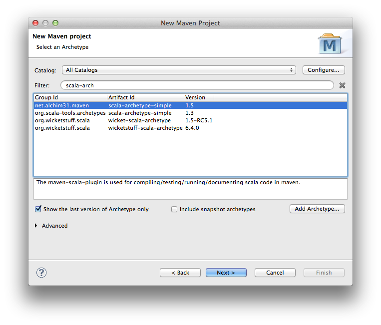
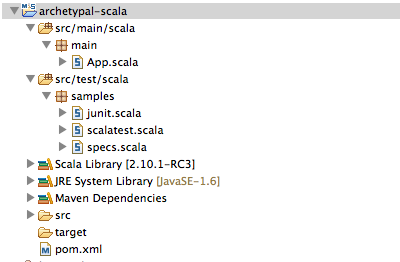
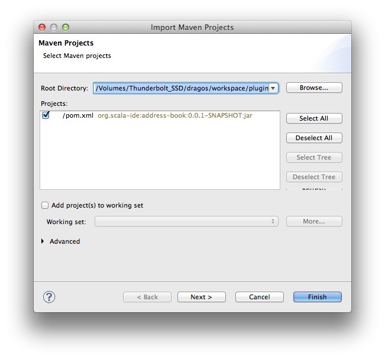

Using Scala IDE on Maven projects
Using Scala IDE for Eclipse on a Maven Scala project is fairly straightforward.. when all the pieces are in the right place. In this tutorial I will show how to use the Scala IDE on an existing maven project, and how to start with a fresh project.
Install m2eclipse-scala
Maven integration in Eclipse is a separate plugin, and depending on which version of Eclipse you have installed, you might already have it or not.
The default maven plugin does not support Scala out of the box, so you need to install the m2eclipse-scala connector. This connector understands the Scala maven plugin and links the compile phase to the Eclipse Scala Builder.
You can install both plugins by pointing Eclipse to the m2eclipse-scala update site.
Note
If you don’t have the vanilla Maven Integration for Eclipse, make sure you have enabled Check all update sites to find required software. If you already have it, you can leave this box unchecked.
In this tutorial we used the following versions:
- Scala IDE: 3.0.0 for 2.10.1
- m2eclipse: 1.3.1
- m2eclipse-scala: 0.4.2
- scala-maven-plugin: 3.1.3
Create a new Scala Maven project
If everything went well, you should now have Maven and Scala support in your Eclipse installation. Let’s create a new Scala maven project, starting with a simple Scala project based on an archetype.
Select New -> Project -> Other and then select Maven Project. On the next window, search for scala-archetype. Make sure you select the one in group net.alchim31.maven, and click Next.
Follow the wizard and enter values for group ID, artifact, etc. Click Finish and you should have a new Scala project in the workspace.
Notice that the new project has both the Maven and Scala nature, and src/main/scala is listed as a source folder. You should be able to build and launch your project, or run tests.
Import an existing Scala Maven project
It is probably rare to start a new project, so let’s take a look at importing an existing Scala project.
Assuming your project builds fine with maven, you should have something similar in your pom.xml:
<plugin>
<groupId>net.alchim31.maven</groupId>
<artifactId>scala-maven-plugin</artifactId>
<version>3.1.3</version>
<executions>
<execution>
<goals>
<goal>compile</goal>
<goal>testCompile</goal>
</goals>
</execution>
</executions>
To get this project in Eclipse, choose File -> Import -> Existing Maven Project and navigate to the directory containing your maven project.
When you click Finish, the project is imported and it should have both Maven and Scala natures. You’ll notice that both src/main/java and src/main/scala are listed as source folders. You should be able to build and run your application, and use all Maven commands on your project.
Warning
As of March 2013, a bug causes both src/main/scala and src/test/scala to use the default output folder (target/classes). This may be confusing when building tests, since their class files will not end in target/test-classes, as they would when building on the command line. You can work around this by manually changing the output folder for src/test/scala.